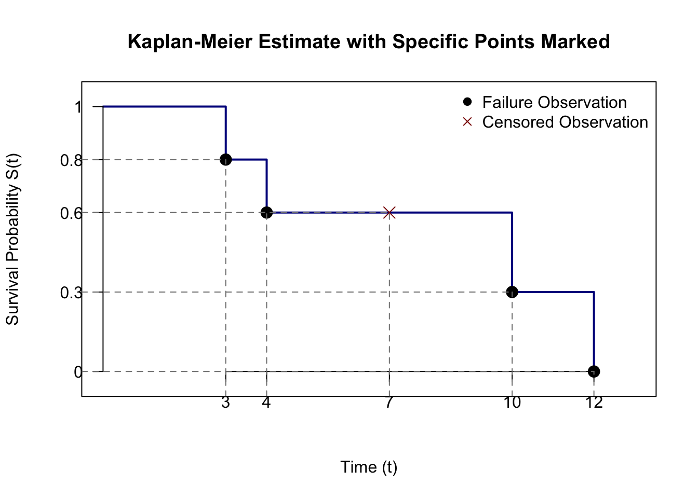
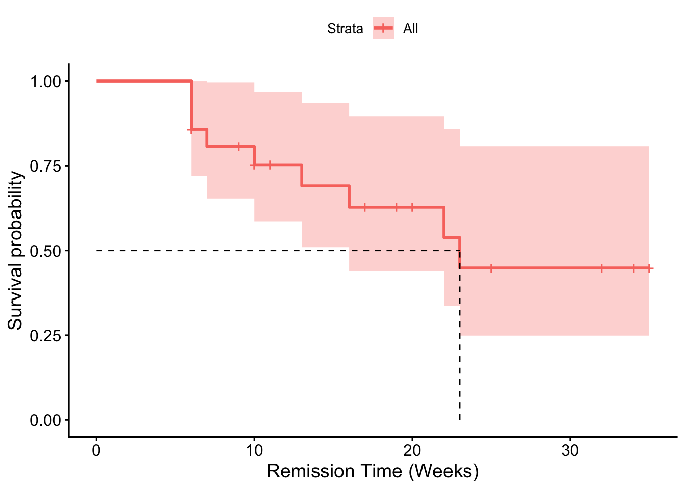

2Estimating survivor functions: life-tables and Kaplan-Meier
Aims for this chapter
In this chapter, the aim is to estimate the survivor function \(S(t)\) for \(t\ge 0\), given a sample of survival times. The sample may include censored observations, and so we need to be able to incorporate censored observations in survivor function estimates. In particular, we will:
learn how to use the life-table method and Kaplan-Meier method for estimating \(S(t)\);
understand the data requirements of each method: how the life-table method works with grouped data, and the Kaplan-Meier method works with individual survival/censoring times;
understand the key role of conditional probability for estimating \(S(t)\): how we make use of results such as \(P(T\ge t_2) = P(T\ge t_1)P(T\ge t_2 | T\ge t_1)\) for \(t_2>t_1\);
learn how to implement the Kaplan-Meier method using R.
2.1 Preliminaries
You may have seen before how to estimate a cumulative distribution function \(F(t)\) using the empirical distribution function. We can obviously use the same idea to estimate a survivor function \(S(t)=1-F(t)\). The method is
obtain a sample of values \(t_1,\ldots,t_n\) from the distribution of \(T\)
estimate the survivor function \(S(t) = P(T\ge t)\) for any value of \(t\) by counting the proportion of values in the sample \(t_1,\ldots,t_n\) that are greater than or equal to \(t\).
Example
We will test the method above in R to estimate \(S(1)=P(T\ge 1)\) where \(T\sim exp(rate = 1)\):
# fix the random seed so you can reproduce thisset.seed(123) # generate a sample of 1000 random observations from the exp(rate = 1) distributiont_sample <-rexp(n =1000, rate =1)# count how many observations in the sample are greater than or equal to 1# and divide by 1000 to get the proportionsum(t_sample >=1) /1000
[1] 0.393
# compare with the true value of the survivor function:1-pexp(1, rate =1)
[1] 0.3678794
Note
This approach, on its own, won’t work if the sample of observations includes censored data!
2.1.1 The factorisation method
We will see later that it can be convenient to estimate a survival probability via a factorisation. As an example, if we want to estimate \(S(2)\), we can write
Suppose we have a sample of survival times \(t_1,\ldots t_n\) from the distribution of \(T\)
We estimate \(S(1)\) exactly as before
We estimate \(P(T\ge 2|T\ge 1)\) by counting the proportion of observations in our sample greater than or equal to 2, out of those observations which are greater than or equal to 1.
We multiply the estimates from steps 2 and 3 to get an estimate of \(S(2)\)
This may seem unnecessarily complicated, but it will be useful for handling censored observations in our sample.
Example
We illustrate the above approach in R, again with \(T\sim exp(rate = 1)\) for illustration.
# fix the random seed so you can reproduce thisset.seed(123) # generate a sample of 1000 random observations from the exp(rate=1) distributiont_sample <-rexp(1000) # count how many observations in the sample are greater than or equal to 1# and divide by 100 to get the proportionp1 <-sum(t_sample >=1) /1000# Extract observations in the sample are greater than or equal to 1t_sample_above_1 <- t_sample[t_sample >=1]# count how many observations in the reduced are greater than or equal to 2# and divide by the sample size to get the proportionp2 <-sum(t_sample_above_1 >=2) /length(t_sample_above_1)# Multiply to estimate the desired probabilityp1 * p2
[1] 0.137
# Compare with the true value of the probability1-pexp(2, rate =1)
[1] 0.1353353
2.1.2 Terminology: “at risk”
We use the term “at risk” to mean that the individual has not yet had the failure event (e.g. death): they are still “at risk” of the event occurring. The number of patients at risk during at some interval is the maximum number of events that could occur in that interval
Continuing the R example above, we started with a sample of 1000 patients, so there were 1000 patients at risk for \(t\ge 0\). At time \(t=1\), if we count how many patients have had their event by this time:
sum(t_sample<1)
[1] 607
we say that there are \(1000-607\) patients at risk at time \(t\ge 1\). We estimate \[
P(T\ge 2 | T\ge 1)
\] by computing \[
\frac{\mbox{number of patients with survival times }\ge 2}{\mbox{number of patients at risk during the period time }t\ge1}
\]
2.2 Life table estimate of the survivor function
Note
The life table method (also known as the “actuarial method”) involves grouping the data: this loses information, and the estimate will depend on the choice of grouping. The life-table method can, however, handled censored observations. Note that the data may have been collated in a grouped format to start with, so that exact survival times/censoring times are not available. Note also that this method is not actually estimating the entire function\(S(t)\) for all \(t\ge 0\); it estimates \(S(t)\) at a finite set of \(t\) values.
We will use the lung dataset as an example.
library(tidyverse)lungData <- survival::lung %>%select(time, status) %>%mutate (status = status -1)
Choose a set of time intervals. The end point for the last interval needs to exceed the longest survival/censoring time in the data. We have
max(lungData$time)
[1] 1022
and we choose the intervals to be \([0, 200), [200, 400), [400, 600), [600, 800), [800, 1000), [1000, 1200)\):
breaks <-seq(0, 1200, by =200)
This means we will obtain estimates of \(S(200), S(400), S(600), S(800), S(1000)\). If we want to estimate \(S(t)\) at more values of \(t\), we would have to choose more intervals. (If the data were grouped to begin with, we would just use the intervals provided with the data.)
Count the number of deaths and the number of censored observations in each interval. Count also the number of patients at risk at the start of each interval: the total sample size, minus all deaths and censored observations that have occurred prior to the start of the interval.
This code assigns each observation to an interval
lung_binned <- lungData %>%mutate(# Use cut to assign each 'time' to a 200-day intervaltime_interval =cut(time,breaks = breaks,right =FALSE, # Intervals are [start, end)include.lowest =TRUE, # Include the starting point (0)labels =paste0(breaks[-length(breaks)], "-", breaks[-1]) # Custom labels ) )head(lung_binned)
survival_summary_table <- lung_binned %>%group_by(time_interval) %>%summarise(N_Deaths =sum(status ==1), # Count observations where status is 1 (Dead)N_Censored =sum(status ==0), # Count observations where status is 0 (Censored) ) %>%mutate(at_risk =nrow(lungData) -c(0,cumsum(N_Deaths)[1:5] +cumsum(N_Censored)[1:5])) knitr::kable(survival_summary_table)
time_interval
N_Deaths
N_Censored
at_risk
0-200
72
12
228
200-400
54
33
144
400-600
22
11
57
600-800
15
1
24
800-1000
2
4
8
1000-1200
0
2
2
Now we deal with the censoring. Considering \(S(200)\), for example, we could estimate this by \[
\frac{228 - 72}{228}
\] as there were 228 patients at risk for the period \(0\le t < 200\), and there were 72 deaths during this period. But 12 patients were not observed for the full 200 days, as they were censored.
The actuarial assumption
We make the “actuarial assumption” that censoring within an interval occurs at a uniform rate over that interval. So if there were 12 censored observations occurring at a uniform rate over the interval \([0, 200)\), we treat this as equivalent to \(0.5 \times 12\) patients being at risk for the whole interval. The “adjusted” number at risk is calculated as \(228 - 0.5\times 12\)
Note that the estimates would be less reliable as time increases, as the number at risk decreases; we don’t expect the statement \(P(T\ge 1200 | T\ge 1000)=1\) to be true, for example.
To do the calculations in R:
P <- (survival_summary_table$at_risk_adjusted - survival_summary_table$N_Deaths)/ survival_summary_table$at_risk_adjusted# Take the cumulative product of P to get the survivor function estimates with cumprod(P)# This is just to format things nicely:knitr::kable(data.frame(`time t`= breaks, `S(t)`=round(c(1, cumprod(P)), 3),check.names =FALSE))
time t
S(t)
0
1.000
200
0.676
400
0.390
600
0.223
800
0.081
1000
0.054
1200
0.054
Note
We have just shown here the “life table estimate” of the survivor function. Life tables such as those produced by the Office for National Statistics typically present more information. For example, a life table may consider a cohort of size 100,000, and then list the number expected to be alive at the start of each period (obtained by multiplying \(S(t)\) by 100,000 for each \(t\)),
2.3 Kaplan-Meier estimate of \(S(t)\)
This is the most commonly reported estimate of a survivor function; you’ll see a Kaplan-Meier plot in just about any publication of clinical trial results involving survival data.
The Kaplan-Meier estimate requires individual survival/censoring times; it doesn’t work with grouped data, but, unlike the life table method, it provides an estimate of the function \(S(t)\) for \(t\ge 0\).
We will first show how to construct the Kaplan-Meier estimate using an example. Suppose we have five patients and observe survival times of \(t=3, 4, 10, 12\) for four of them, and have one censored observation at \(t=7\) (so for the fifth patient, we only know their survival time exceeds 7).

For \(0\le t < 3\), everyone who is at risk is still alive, so we estimate \(\hat{S}(t) = 1\) for \(0\le t < 3\).
One of the five patients is not alive at time \(t=3\), so we estimate \(\hat{S}(3) = 4/5\).
For \(3\le t < 4\), everyone who is at risk is still alive, so for \(3\le t < 4\) we use the factorisation approach in Section 2.1.1 and estimate \[
\hat{S}(t) = \hat{S}(3)\hat{P}(T\ge t|T\ge 3) = \frac{4}{5}\times 1
\]
\(\hat{S}(t) = 1\) for \(0\le t < 3\).
For \(t=4\) we again use the factorisation approach and write \[
S(4) = S(3)P(T\ge 4|T\ge 3).
\] We have \(\hat{S}(3)=4/5\) as before, but now we note that, of the four patients alive at time \(t=3\), one was not alive at time \(t=4\), so we have the estimate \[
\hat{S}(4) = \hat{S}(3)\hat{P}(T\ge 4|T\ge 3) = \frac{4}{5}\times \frac{3}{4} = \frac{3}{5}
\]
For \(4\le t < 10\), we do not observe any deaths out of those patients at risk (though we have observed one censoring event), so for \(4\le t < 10\) we have \[
\hat{S}(t) = \hat{S}(4)\hat{P}(T\ge t|T\ge 4) = \frac{3}{5}\times 1
\]
For \(t=10\), we could follow the same process as before and write \[
S(10) = S(4)P(T\ge 10|T\ge 4),
\] but this is awkward because of the censoring event at time \(t=7\). But in the factorisation method, we can condition on any time we like up to time \(t=10\). If we instead write \[
S(10) = S(7)P(T\ge 10|T\ge 7),
\] we can now handle the censoring more easily. We have \(\hat{S}(7)=3/5\) from previously. From time \(t=7\) onwards, there were two patients at risk, and one was alive at time \(t=10\). So we estimate \[
\hat{S}(10) = \hat{S}(7)\hat{P}(T\ge 10|T\ge 7) = \frac{3}{5}\times \frac{1}{2} = \frac{3}{10}.
\]
Continuing this approach, we estimate \(\hat{S}(t) = 3/10\) for \(10 \le t < 12\) and \(\hat{S}(t) = 0\) for \(t\ge 12\).
Tabulating the Kaplan-Meier estimate, we have
\(t\)
\(\hat{S}(t)\)
1.0
\(0\le t < 3\)
0.8
\(3\le t < 4\)
0.6
\(4\le t < 10\)
0.3
\(10\le t < 12\)
0.0
\(12\le t\)
Note
The Kaplan-Meier estimate is a step function:
it decreases by some amount at every observed failure event
there is no decrease in the function at any censoring event, but we reduce the number of patients at risk in subsequent calculations.
2.3.1 General notation and formula
We define
\(t_{(1)} <t_{(2)} < \ldots <t_{(k)}\) to be the \(k\) distinct lifetimes with \(d_j\) individuals failing at time \(t_{(j)}\). Note that these are times when we observe failure events only, not censoring;
\(I_j\) to be the number of individuals who were censored in the interval \(t_{(j-1)} \leq t < t_{(j)}\)
\(n\) to be the total number of patients at the beginning of the study;
\(r_j\) to be the number of patients at risk just before time \(t_{(j)}\): the number of patients we are monitoring just before time \(t_{(j)}\)
We then compute
\[\begin{align}
r_1 &= n - I_1 \\
r_{j} &= r_{j-1} - d_{j-1} - I_{j} \\
&= n - (d_1 + d_2 + \ldots +d_{j-1})-(I_1+I_2+\ldots+I_{j}) \quad \textrm{for } j \geq 2
\end{align}\] and the Kaplan-Meier estimate of \(S(t)\) is given by \[
\hat{S}(t) = \prod_{j=1}^s \left( 1 - \frac{d_j}{r_j} \right) \quad \textrm{for } t_{(s)} \leq t < t_{(s+1)}
\]
If \(I_{k+1} > 0\) then \[\hat{S}(t) = \prod_{j=1}^s \left( 1 - \frac{d_j}{r_j} \right) > 0\] since \(r_k > d_k\). Hence if there are still individuals left in the trial after the last observed death (possibly as the observation period has ended) then \(\hat{S}(t)\) will not tend to 0. However we know, by definition that as \(t \rightarrow \infty\) then \(S(t) \rightarrow 0\) since everyone will fail eventually, so the Kaplan-Meier estimate is biased if the maximum observation is censored.
We can also estimate \(H(t)\) by \(\hat{H}(t)= -\log{\hat{S}(t)}\) or we can use the simpler approximation \[
\tilde{H}(t)= \sum_{j=1}^s \frac{d_j}{r_j} \quad \textrm{for } t_{(s)} \leq t < t_{(s+1)}
\]
Example: Tumour Remission Times
A study investigates the remission times for 10 patients with tumours. During the study:
six relapse after 3.0, 6.5, 6.5, 10, 12, and 15 months
and one was lost to follow-up at 8.4 months;
the other three were still in remission at end of study after 4.0, 5.7, 10.1 months respectively.
We show this data in Table 2.1 along with the Kaplan-Meier estimate of the survivor function.
Table 2.1: Kaplan-Meier Estimate of the Survivor Function for the Tumour Remission Times Data
\(j\)
\(t_{(j)}\)
\(I_j\)
\(r_j\)
\(d_j\)
\(\left(1-\frac{d_j}{r_j}\right)\)
\(\hat{S}(t)\)
\(t\)
Calculation of \(\hat{S}(t)\)
0
0
0
1.00
\(0 \leq t <3.0\)
1
3.00
0
10
1
9/10
0.90
\(3.0 \leq t<6.5\)
9/10
2
6.50
2
7
2
5/7
0.64
\(6.5\leq t<10.0\)
\(9/10 \times 5/7\)
3
10.00
1
4
1
3/4
0.48
\(10.0\leq t<12.0\)
\(9/10 \times 5/7 \times 3/4\)
4
12.00
1
2
1
1/2
0.24
\(12.0\leq t<15.0\)
\(9/10 \times 5/7 \times 3/4 \times 1/2\)
5
15.00
0
1
1
0
0.00
\(15\leq t\)
2.3.2 Finding the Median Survival Time from KM plots
The median, \(M\), is defined as \[
M = \mathop{\mathrm{argmin}}_t \{ S(t) \leq 0.5\},
\] i.e. it is the smallest value of \(t\) where the survivor function takes a value of 0.5 or less.
Example: Tumour Remission Times continued
We can see from Table 2.1 that \(\hat{S}(t) > 0.5\) for \(0 \leq t < 10\) and \(\hat{S}(10)\leq 0.5\) so that the median tumour remission time is 10 months.
2.3.3 Variance of the Kaplan-Meier estimator
\(\hat{S}(t)\) is subject to sampling error. The Greenwood estimate of the variance is
R functions for analysing survival data are in the survival package. You shouldn’t need to install it as it is included in the basic installation of R.
The first step is to create a survival object with the function Surv() (note the capital S). It contains information on which observations are censored (coded with a 0) and which are observed events (coded with a 1).
The next step is to estimate the survivor curve with the function survfit().
To produce flexible Kaplan-Meier plots use the ggsurvplot function in the survminer package (install and load it as above). The function summary() will give the estimate of the survivor function and other details of the model fitting.
We will create the data frame from scratch. The analysis can be performed as described below.
Kaplan-Meier Estimate of the survivor function for the Tumour Remission Times data
Note
There are lots of arguments you can specify in the ggsurvplot function. The minimum you need in the above example would be
ggsurvplot(tumourSurv, data = tumour_sv)
Note also that this creates a ggplot2 object that you can customise with other ggplot2 commands. To access this you would do
KMplot <-ggsurvplot(tumourSurv, data = tumour_sv)KM$plot
2.4 Tasks
Derive the life table estimate of the survival function for patients with angina pectoris, using the data given below. (To shorten the question, data are only given for the first five years of survival.)
Survival time (years)
Number of patients known to survive at beginning of interval
Number of patients lost to follow up
0 - 1
2418
0
1 - 2
1962
39
2 - 3
1697
22
3 - 4
1523
23
4 - 5
1329
24
The data below give the time to relapse (in weeks), following remission, for a group of leukaemia patients treated with a particular drug: (* indicates a right censored value).
Comment on the estimated survivor function for \(t>25\) weeks: whether you think the estimate is reliable or not.
Solution
We proceed by finding the number who died in the first interval \(2418-1962 = 456\); in the second interval \(1962-39-1697=226\) and so on. We tabulate and add in the adjusted number at risk
Survival time (years)
Number of patients known to survive at beginning of interval
ggsurvplot(leukemiaSurv, data = leukemia,surv.median.line ='hv',xlab ="Remission Time (Weeks)")

For the median we need the smallest \(t\) for which the estimated survivor function \(S(t)\le0.5\). We can read this off the table as \(t=23\).
The the proportion of patients that will not relapse within 6 weeks of starting remission is \(S(6)\). From the table, this is estimated as 0.857.
For \(t>25\) we see in the plot that the confidence intervals for \(\hat{S}(t)\) are wide, and we also note all observations for \(t>25\) are censored. The estimate of \(S(t)\) may not very reliable here. A ‘flat’ survivor function as seen for \(t>23\) may not be plausible, unless it is the case that if remission has not occurred after a certain number of weeks, it is unlikely to occur at all.